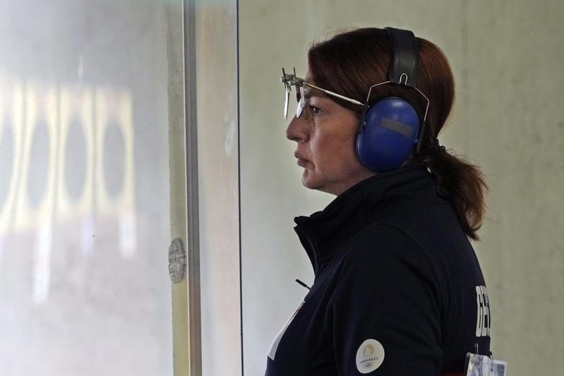

连10次征战奥运纵横赛场36年的乔治亚射击女将萨卢克瓦泽（Nino Salukvadze），决定巴黎奥运后正式退休。
美联社和路透社报导，萨卢克瓦泽19岁时首次登上1988年汉城（现译首尔）奥运，当时她代表苏联参赛，夺下25公尺手枪金牌、10公尺空气手枪银牌。
接下来1992年巴塞隆纳、1996年亚特兰大、2000年雪梨、2004年雅典、2008年北京、2012年伦敦、2016年里约和2021年因COVID-19疫情延后登场的东京奥运，她都没缺席。
到了2024年巴黎奥运，55岁的萨卢克瓦泽成为第一位10度参加奥运的女子选手，追平加拿大男子马术选手米勒（Ian Millar）创下的最多参赛纪录；且由于米勒生涯曾抵制1980年奥运没参赛，萨卢克瓦泽成了史上第一位连10届都进入奥运殿堂的选手。
1990年代，乔治亚独立后她难以养家糊口，差点就不再参赛。她曾说：「第1次奥运之后，我甚至不能想像会在10届奥运中较劲。」
2016年里约奥运，她和马查华利安尼（Tsotne Machavariani）写下奥运史上首次母子一起参赛的纪录。
2021年东京奥运过后，萨卢克瓦泽也曾宣布退休，不过被她的父亲、同时也是她的教练说服继续再战。
萨卢克瓦泽的父亲于今年初去世，享耆寿93岁，但他在世时见证了女儿获得巴黎奥运的参赛资格，为了纪念父亲，萨卢克瓦泽选择出赛，不过她说这次真的是最后一次参加奥运了。
她昨天在最后一场比赛结束后，在沙托鲁国家射击中心（Chateauroux Shooting Center）附近告诉美联社：「他不仅是我在运动方面的导师，也是我生活中的导师。他是个相当有智能的人。」
萨卢克瓦泽说：「他一生中从未要求过任何东西。我们的关系有默契到只要用眼神就能知道对方在想什么。」
她回忆起父亲说的话：「『如果妳放弃，就没有回头路了，就去试试看吧』。这是他一生中唯一要求我的事，我想以后或许也没有机会了，为了他，我使尽全力。」
她说，自己儿子也向她施压，威胁她说：「如果你放弃，我也要放弃。」
萨卢克瓦泽参加10届奥运，一共获得3枚奖牌，金、银、铜各一。她在巴黎奥运10公尺空气手枪项目名列38，在25公尺手枪项目排名40，这意味着她未能闯入决赛。
萨卢克瓦泽的最后一面奖牌是在2008年北京奥运，是她个人首次替1991年独立的乔治亚进帐一面铜牌。尽管2008年乔治亚与俄罗斯交战，她在颁奖台上仍拥抱俄罗斯银牌得主帕德里纳（Natalia Paderina），展现和平精神。
但萨卢克瓦泽与奥运的缘份可能还未了，因为她是自己射击俱乐部的教练，也是乔治亚奥委会副主席。
巴黎奥运热话题
- 除了金银还有钻石 奥运场上的求婚名场面真不少
- 「胯下一包」卡到杆子 法选手撑竿跳失败却暴红
- 再战2028？拜尔丝：永不说不 但到时我真的老了
- 金牌内战成饭圈大战？孙颖莎满场欢呼 陈梦收获嘘声
- 4日赛程 网球男单王者诞生、樊振东力拚桌球男单金牌